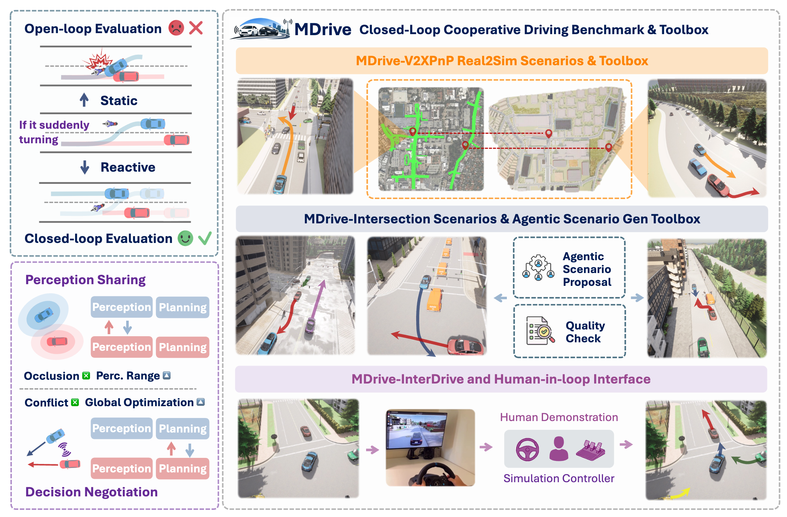
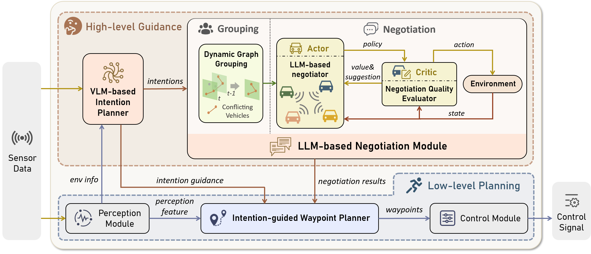
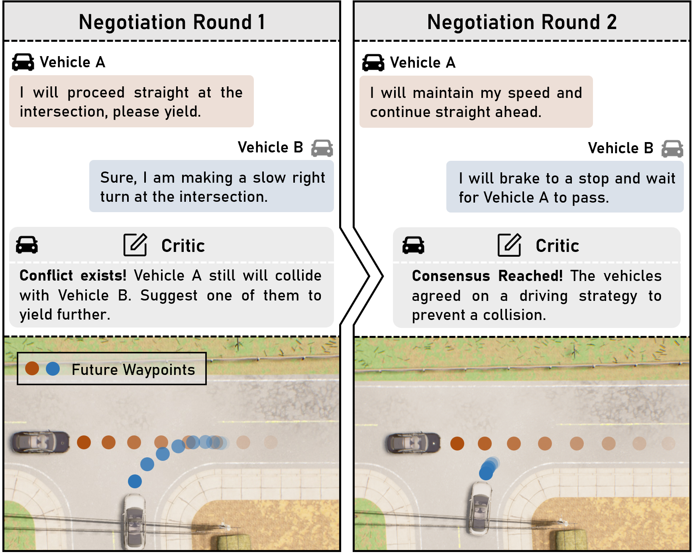

Grand Challenge
Track overview
This track is part of the DriveX Grand Challenge 2026 within the broader DriveX initiative led by UCLA and developed with partner institutions and collaborators.
The MDrive Cooperative Driving Challenge evaluates whether multi-agent coordination and V2X communication can significantly improve autonomous driving safety and efficiency in high-stakes urban scenarios. While traditional models rely on single-vehicle onboard perception, MDrive introduces a closed-loop benchmark where connected agents share sensory data to navigate complex environments.
The challenge is built on MDriveBench, a multi-agent extension of high-fidelity simulators. Scenarios include occluded intersections, unprotected turns, and emergency yields, providing a robust testbed for cooperative intelligence.
Methodology
CoLMDriver pipeline

Submissions are evaluated using metrics tailored for closed-loop safety and cooperative efficiency. The benchmark is designed to highlight where cooperative models show significant improvements over single-agent baselines — particularly in occluded environments and high-density traffic merges.
Scenarios
Multi-agent negotiation

For full track rules, dataset access, baselines, and submission deadlines, please refer to the official MDrive challenge site.